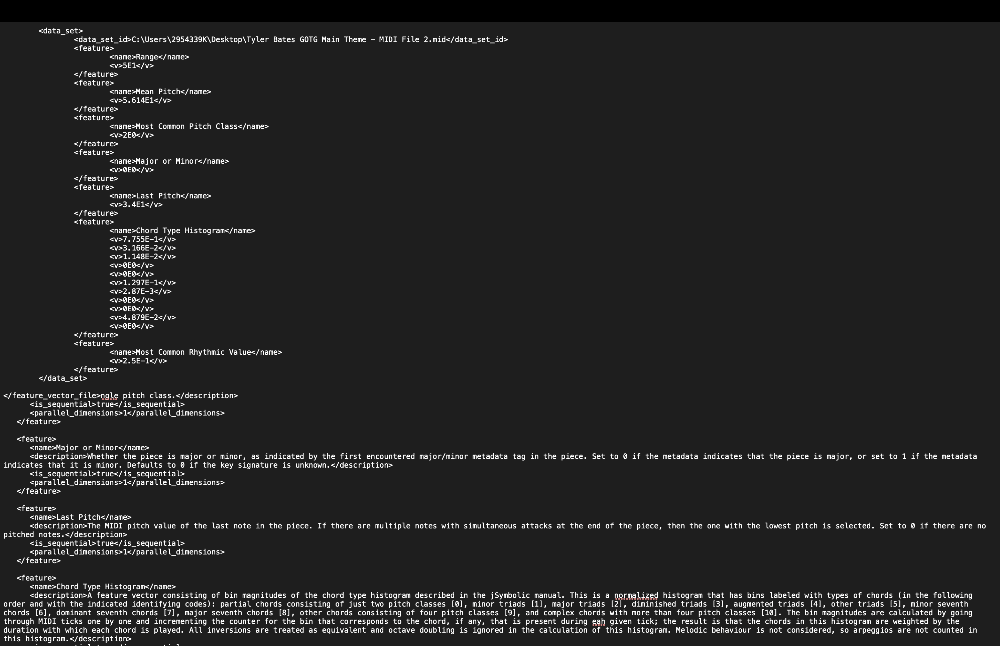
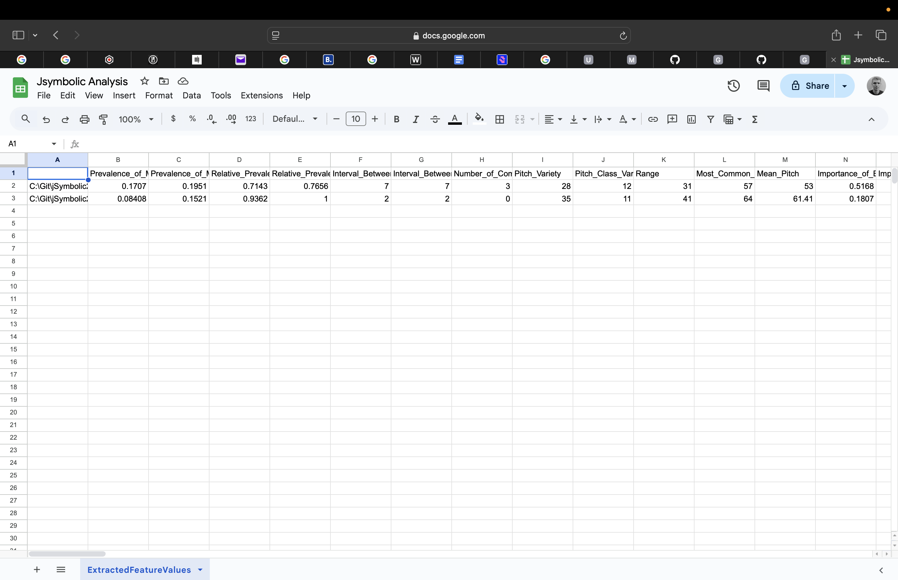
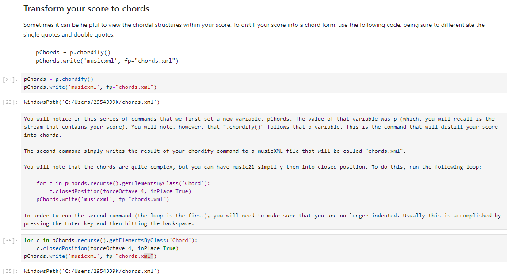

Music Analytic’s
This week I had to export my piece as a midi file in order to run a Jsymbolic Analysis. This allowed me to generate feature information such as range, mean pitch, major or minor, chord type hisogram, most common pitch class (key), last pitch, most common rhythmic value and pitch variety. Thid is a good form of data analyses for achieve average values and lists.
I selected elements like major or minor because this could be useful for categorising many songs into major or minor folders. This could be used if somebody wanted to extract major or minor riffs that may fit within a major or minor scale. This could be useful when learning a musical instrument and help with creating music books and so on.
Symbolic analysis date is more complex than standard data. It has its can analyse a data file as provide internal data structures that may be difficult to work out on a human level upon reading or listening to a piece. Symbolic analysis is an effecient way to generate internal complex data.
Upon rendering my Jsymbolic analysis of my peiece, I was able to export this as a CSV file, readable in google sheets or and excel reader. This provided more effeciency in reading complex data analysis outputs.
I was also able to export my symbolic analysis as an XML file which could be viewed using a text editor. It provided a good clean range of code with the complex data that I needed. There was also descriptions of what the code means. This imrpoved readability. See screenshot:

I was able to export the Jsymbolic analysis as a CSV and here is an example screenshot.

The next task for this weeks lab was to install music 21 on my machine. I did this by installing the Anaconda application.
I was able to access the Jupyter notebook and upload the .ipynb file I saved from the class moodle. I was able to use this file with the python notebook to generate a piano roll and pitch histogram of my piece using music21.
CHORDIFY
With my file 'Tyler Bates GOTG Main Theme XML.musicxml' loaded into python, I was able to start analysis on it. Chordify was on the first processes I dealt with. I used the code from the python notebook to create a chordify command which was then written into a new music xml files readable through Musescore or a text editor. The chords were complex so another command was used to simpify them into the closed position.

HARMONIC ANALYSIS
Attempted this step, however I could not find a solution to the error message "attribute error" will ask this in class. The following code was used: PAnalysis = pChords for c in pAnalysis.recurse().getElementsByClass('Chord'): rn = roman.romanNumeralFromChord(c, key.key('F')) c.addLyric(str(rn.figure)) pAnalysis.write('musicxml' , fp="chordAnalysis.xml") This triggered an attribute error message in cell in[53], line 3. The roman numeral code section. The specific error in question was defined as "module 'music21.key' has no attribute 'key' DATA STREAM AND GETTING THE AMBITUS "Music21 can extract the range of a particular voice or instrument. To do this, you will need to figure out which part you would like to analyze. If you are struggling to determine that, you can review the stream structure we displayed above. If you do know the part, use the following, substituting the 0 with the proper part number:" "Music 21 stores files in a stream, which is a data structure spaced in time. So, each object has an offset that epresents how many quarter notes it lies from the beginning. A stream can (and often does) contain other streams for scores, parts, and measures." For extracting the range of my chosen instrument within my score, I have referred to the stream structure to locate the part number. The following line of code was identified. ‹music 1.stream.Part Bb Trumpet 1> My part number is 1, Upon inputing code to receive the Ambitus the following result was obtained: ‹music 1.interval.Interval M17> PIANO ROLL OF PITCHES, PITCH HISTOGRAM, SCATTER PLOT OF PITCHES I generated all three of these. For the Piano roll of pitches I used the part number 3 which referred to the Horn in F and this was confirmed by referencing the music data stream. The piano roll was created for measures 1 through to 42. This generated a graph with measure numbers linked to pitches on an x and y basis. Upon generating the Pitch Historgram, I noted the x axis gave me the number of pitches and the y axis gave me the note and octave from C1 to C6 and so on. Upon generating the Scatter Plot of Pitches I was at first confusded with the layout. I now understand that the quarter length on the y axis refers to the note length and the x axis gives us the note pitch and octave. Both the Scatter Plot and Histogram were useful in giving a full represenation of the entire score whereas the piano roll was useful for isolating a particular instrument. ] Week5Lab